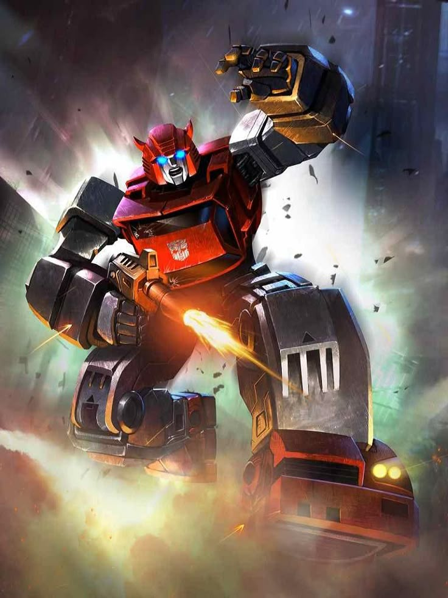

ARCHIVE #006
CLIFFJUMPER
AUTOBOTLieutenant • Soldat

MODE ALTERNATIF

MODE ROBOT
IDENTITÉ
ARMEMENT
- Canon Plasma
- Épée d'Energon
- Mitraillette
PERSONNALITÉ
Cliffjumper est généralement présenté comme un jeune soldat Autobot, enclin et efficace au combat mais avec un caractère de tête brûlée. Il ressemble à Bumblebee de par sa taille et son imprudence mais de couleurs rouge bien qu'ils soient tout deux souvent ensemble pour des missions. Malheureusement, c'est un personnage qui est réputé pour mourir vite dans les différents univers Transformers. Sa personnalité et son histoire son souvent les mêmes mais peuvent varier selon les continuités.
RELATIONS
Ami le plus proche lui ressemblant beaucoup et frère d'arme dans certaines de continuités
Ennemi et Leader des Decepticons
Allié et Leader des Autobots
Admiré par Cliffjumper pour sa combativité et sa force brute
Admiré par Cliffjumperpour sa discipline et sa stratégie
APPARITIONS
Première apparition dans la génération G1 (série et comics Marvel).
The Transformers: The Movie
Comics IDW
Transformers: Animated
Série de comics Shattered Glass
Transformers: Prime où il aura un destin funeste dans les premiers épisodes
Jeux Transformers: Trilogie de Cybertron (War For Cybertron (DS uniquement), Fall Of Cybertron et Rise of the Dark Spark(Escalation uniquement))
Transformers: Robot in Disguised (2015)
Bumblebee, film live-action dédié au personnage éponyme où il aura un destin aussi rapide que dans Transformers: Prime
Transformers: Trilogie de Cybertron (Siege uniquement)
Comics Skybound
Transformers: One, aperçu en arrière-plan
MULTIVERS
Version originale de la franchise.
Plusieurs versions dans les différentes continuités IDW.
Version des films live-action.
Version alternative où les rôles des factions sont inversés.